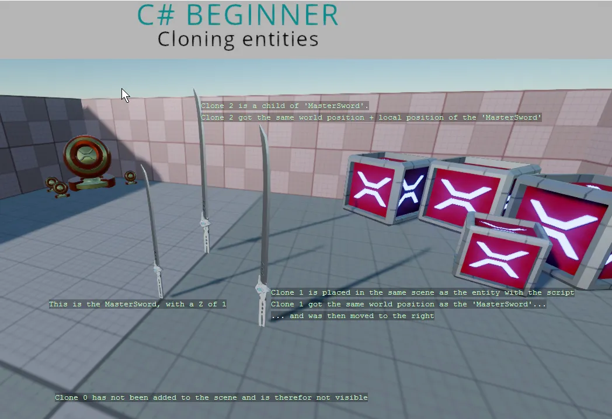

Cloning an entity
You can find this sample in the tutorial project: Menu → Cloning entities
Explanation
This C# Beginner tutorial covers how to clone an existing entity and how to add that clone to the scene.
A cloned entity is an exact copy of an entity, which means that the Transform and all other components with their set values are copied too.

Code
using Stride.Core.Mathematics;
using Stride.Engine;
namespace CSharpBeginner.Code
{
/// <summary>
/// This script demonstrates how to clone an existing entity.
/// Cloned entities can be added to the scene hierarchy.
/// <para>
/// https://doc.stride3d.net/latest/en/tutorials/csharpbeginner/cloning-entities.html
/// </para>
/// </summary>
public class CloneEntityDemo : SyncScript
{
public Entity MasterSword;
private Entity clone1;
private Entity clone2;
private Entity clone3;
public override void Start()
{
// Clone 0
// The Clone method clones an existing entity, including all of its components
// However, if we don't add it to the scene, we will never get to see it.
var clone0 = MasterSword.Clone();
clone0.Transform.Position += new Vector3(0, 1, 0);
// Clone 1
// We can add Clone1 to the same scene that the current entity is part of
clone1 = MasterSword.Clone();
Entity.Scene.Entities.Add(clone1);
// The cloned entity will be at the same worldposition as the original Sword entity
// Move it to the right so that we can see it
clone1.Transform.Position += new Vector3(-1, 0, 0);
clone1.Transform.Scale *= new Vector3(0.8f);
// Clone 2
// We can also add a cloned entity as a child of an existing entity.
clone2 = MasterSword.Clone();
Entity.AddChild(clone2);
clone2.Transform.Position += new Vector3(1, 0, 0);
clone2.Transform.Scale = new Vector3(0.6f);
// Clone 3
// We can also add a cloned entity as a child of an existing entity by setting the parent
// That means it will use the parent's world position + parent's local position
clone3 = MasterSword.Clone();
clone3.Transform.Parent = Entity.Transform; // Or Entity.SetParent(Entity.Transform)
clone3.Transform.Position += new Vector3(0, 0, -0.5f);
clone3.Transform.Scale = new Vector3(0.4f);
}
public override void Update()
{
DebugText.Print("This is the MasterSword, with a Z of 1", new Int2(500, 320));
DebugText.Print("Clone 0 has not been added to the scene and is therefore not visible", new Int2(600, 250));
DebugText.Print("Clone 1 is placed in the same scene as the entity with the script", new Int2(700, 600));
DebugText.Print("Clone 1 got the same world position as the 'MasterSword'...", new Int2(700, 620));
DebugText.Print("... and was then moved to the right", new Int2(700, 640));
DebugText.Print("Clone 2 and 3 are a child of 'MasterSword'.", new Int2(330, 600));
}
}
}